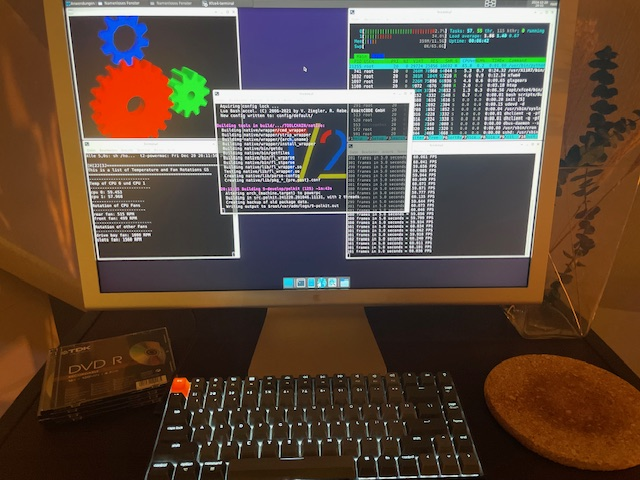

Hello T2/Linux 25.04 - I switched back to 12.24
Man, I am a little bit frustrated right now. Everytime a new release of
T2/Linux
is going online, I am really happy to try it out on my Powermac G5. I download
it and dd it to a USB Stick (here
I explain how to boot a PPC Mac from USB) and than boot the Powermac via OpenFirmware
from that USB Stick and everything works like charme. Like I exspect it.
The Install Process is straight forward and easy, thanks to STONE, the Installer
of T2. But with Version 25.04 there is a problem, the FANs turn to MAX rotation like
there is a kernel module not loaded or something like that and you think the G5
will soon fly away. The next thing: X seems to be broken, I can't startx
anymore.
In 24.12 these things were okay, X works and even 3D-Acceleration works so I could use it in a quite usual way. But now - all of this is gone. Everytime I try, there is another problem. Something other broken. And I am not smart enough to fix it. I do not understand enough and there is not enough documentation to get this done. Sure, René is a One-Man-Show with his T2 Linux Project and he is fixing a lot of older drivers and software packages and he earns nothing and I say thank you man. Great Job. But even in his documentation, I am unable to find the right solution e.g. to crosscompile not the whole target, just a package and all of it's depencies.
I never got Palemoon or ArcticFox compiled or crosscompiled, because there are errors I canot solve. I installed T2/ARM64 on my Mac Mini M4 because this small machine is really powerful so it is a great crosscompoling solution for the me at home for my PPC64 Powermac. But it starts while compiling gcc. I am unable to compile GCC. And without GCC there is no way to compile anything further.
Release: T2 Linux 25.4 "It Only Does Everything"
A lot of crazy things happen right now. A few minutes ago I reported about the living sign of Fienix Linux after the APT Repo down and now I see there is a new version of latest and greatest T2 Linux (ver. 25.4) from Rene Rebe.
With a total of 17 pre-compiled base install ISOs for various Glibc, Musl and uClibc combinations are available for 12 CPU ISAs: Alpha, ARM(64), HPPA64, IA64, MIPS64, PowerPC(64), RISCV64, SPARC64, i586, x86-64. On most architectures the release still boots with as little as 512MB of RAM or even less, and ISO downloads are less than 2GB for base Wayland desktop with Firefox.
T2 runs well on my Powermac G5, as I stated here for detail.
Ressources
- T2/SDE 25.4 announcement
- T2 Download Portal for 25.4
- T2 Linux for direct download for PPC64/32 (64-bit OS kernel, 32-bit user-space)
- T2 Main Website
- Quick Build in seven-1 easy steps
- Getting started w/ a fresh T2 install
- Rene Rebes Medium Blog
Tags: t2linux, powermacg5, linux, ppc64
Status of Firefox on PPC64 Big Endian
So yesterday was the release ouf 24.12 T2/Linux and the maintainer, creator and mastermind behind, René Rebe, were at a lifestream on youtube and twitch. So I played around with T2 on my Powermac G5 and listened to the stream and had a small chat with him. The most important part is an actual browser on that machine so I asked for the actual status of firefox.
René replied that the problems with big endian still exist and occours so there is no Firefox for Big Endian Machines at the moment. Firefox builts well on all little endian processors, but not on the big ones. There is no better answer at this time, but I hope he can do something when he have the time. Because to make that clear: there is not a big audience who is working on big endian ppc64 processors like my 970MP is in the world and I believe he get's not enough feedback and attention for his work for the open source community. But this is another part.
Debian also faces the problem of not building firefox for ppc/64, but they have other important things to do than to fix that.
I know there were patches from oracle for big endian firefox but I cant find the repository anymore. Maybe these patches and the Void Patches could do some important thing? [UPDATE] I found the patches for firefox.
I bet biggest problem are the people at firefox who doesnt care about big endian firefox builts for ppc64 because it is not important.
Ressources
- New Release Of T2/Linux
- Oracle Patches for Firefox
- PPC 750 Void Linux Firefox Patches
- void-packages-ppc750/srcpkgs/firefox/patches/big-endian-image-decoders.patch
- Debian Build Status Firefox
Tags: t2linux, powermacg5, linux, firefox
New Release Of T2/Linux
 T2/Linux 24.12 with XFCE Desktop on Powermac G5
As you know, this weblog is about my 2005 Powermac G5 and how to use it in 2024 soon 2025 as a normal computing device. I installed different Linux Distros on an 1 TB NVMe Device while computing with 12 GB-Ram.
And today reached me the information that famous René Rebe did released T2/Linux 12.2024 [1]. They are pleased to announce T2 24.12 as a major update with a total of 37 pre-compiled base install ISOs for various Glibc, Musl and uClibc combinations are available for 25 CPU ISAs: